PlenoGS: Direct 3D Gaussian Splatting Training from Plenoptic Camera Images
Abstract
Plenoptic cameras capture the full spatial and angular distribution of incoming light in a single acquisition, encoding multiple viewpoints within one image. Despite recent advances in novel view synthesis through 3D Gaussian Splatting (3DGS), existing pipelines assume conventional cameras and require an intermediate step of sub-aperture image extraction before training on plenoptic images. We present PlenoGS, a method that adapts the 3DGS framework to train directly on raw plenoptic images. We derive a differentiable plenoptic projection model that maps 3D Gaussians through both the main lens and the micro-lens array, and introduce a microlens-aware rasterization stage. Our results show that training directly on the plenoptic raw data better exploits the inherent multi-view angular information of plenoptic cameras, yielding improved 3D scene perception compared to models trained on extracted pinhole equivalents, notably with a single input image.
Plenoptic Cameras
Raytrix Camera
Raytrix cameras are plenoptic cameras that capture the full spatial and angular distribution of incoming light in a single acquisition, encoding multiple viewpoints within one image. They consist of a main lens and a micro-lens array that allows for capturing light field information.
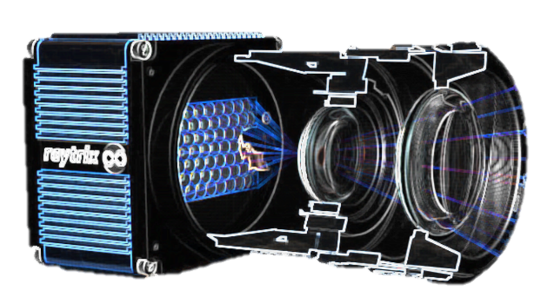
Plenoptic Image
A plenoptic image is a single image captured by a plenoptic camera that contains both spatial and angular information of the scene. It allows for post-capture refocusing, depth estimation, and novel view synthesis.
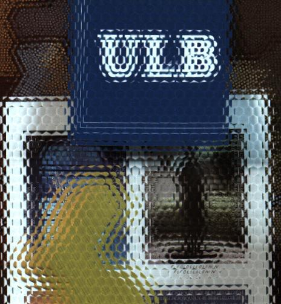
PlenoGS's pipeline
Training Pipeline
We implemented a virtual plenoptic camera in the 3DGS framework to train directly on raw plenoptic images.
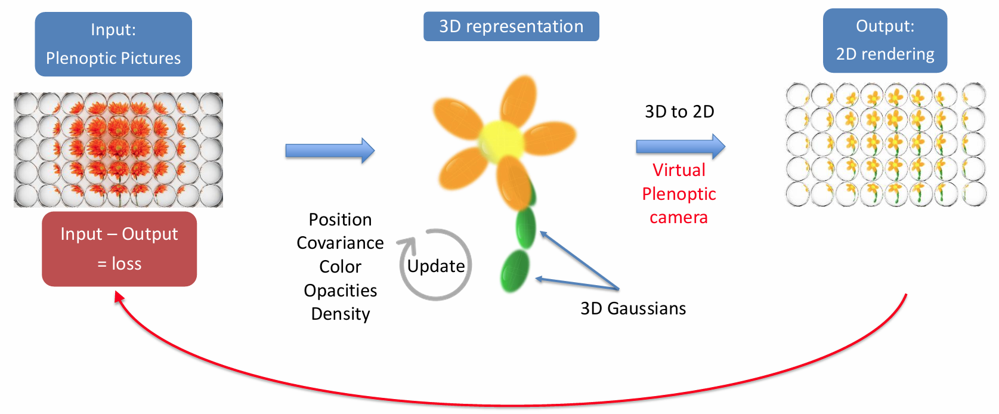
Implementation of Differentiable Rendering
1. Plenoptic projection model
We derive a differentiable plenoptic projection model that maps 3D Gaussians through both the main lens and the micro-lens array.
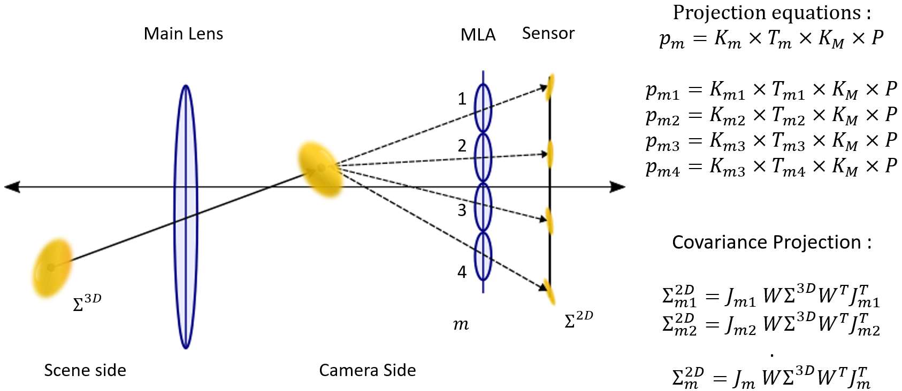
2. Mapping Gaussians to Microlenses
Microlenses array can contain thousands of microlenses, making it computationally expensive to compute the contribution of each Gaussian to every microlens.
To address this, we introduce a mapping strategy that efficiently determines in which microlenses each Gaussian is projected.
We find the closest microlens to the virtual Gaussian projected through the main lens, and then we consider a local neighborhood of microlenses around this closest microlens to compute the contributions of the Gaussian.
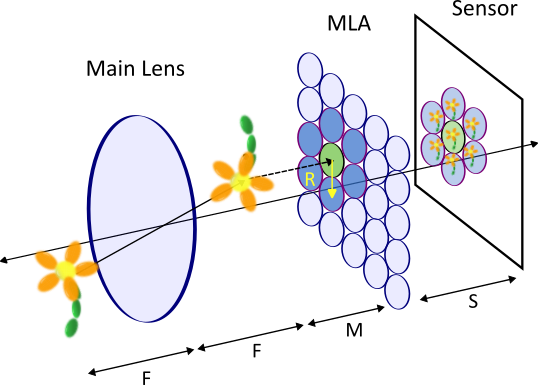
3. Practical implementation
Our method improves the reconstruction of dense scene structure and fine geometric details compared to standard pinhole-based baselines, especially when only a single plenoptic acquisition is available. The following examples illustrate how the raw plenoptic signal is exploited to recover sharper, more consistent novel views.
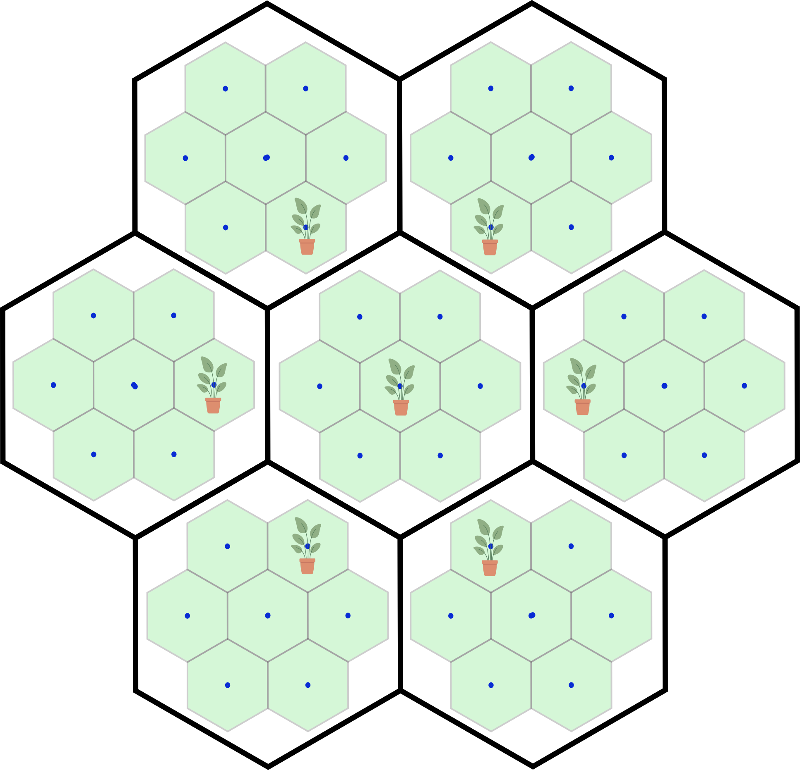
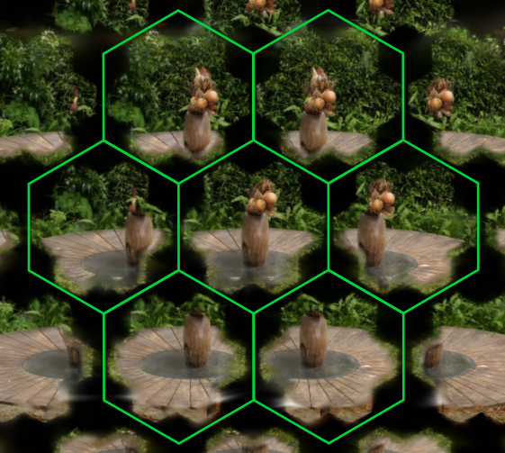
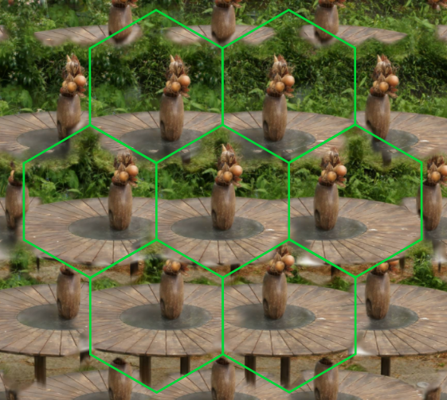
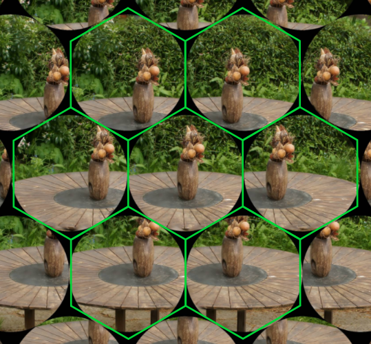
Metrics
| R | PSNR | SSIM | LPIPS | #Gaussians | VRAM | Time |
|---|---|---|---|---|---|---|
| 1 | 18.549 | 0.482 | 0.181 | 3,871,935 | 2.86 GB | 5m 32s |
| 2 | 20.214 | 0.565 | 0.153 | 630,822 | 1.86 GB | 4m 50s |
| 3 | 20.949 | 0.609 | 0.140 | 270,516 | 1.90 GB | 4m 58s |
| 4 | 21.014 | 0.612 | 0.141 | 160,407 | 1.97 GB | 5m 14s |
| 5 | 21.022 | 0.620 | 0.137 | 99,789 | 1.99 GB | 5m 21s |
| 6 | 20.945 | 0.602 | 0.144 | 65,878 | 2.01 GB | 5m 24s |
| Dataset | PSNR | SSIM | LPIPS | Time | #Gaussians |
|---|---|---|---|---|---|
| Fujita | 21.17 | 0.61 | 0.14 | 5m 36s | 49,555 |
| Rabbit | 23.95 | 0.65 | 0.14 | 10m 33s | 55,591 |
| Temple Boat (1k) | 21.25 | 0.59 | 0.28 | 9m 48s | 94,063 |
| Cubes | 14.49 | 0.162 | 0.407 | 5m 07s | 38,573 |
Visual Comparison
1. Comparison with existing pipeline
We compare our plenoptic-aware training strategy against standard Gaussian Splatting baselines trained on conventional pinhole-style inputs.
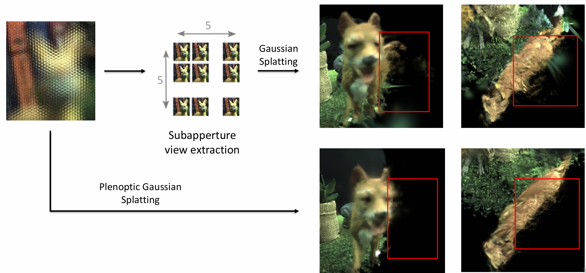
2. Comparison with existing plenoptic Novel View Synthesis
We further evaluate the renderings against existing plenoptic novel view synthesis approaches to highlight the benefit of training directly on raw plenoptic images.
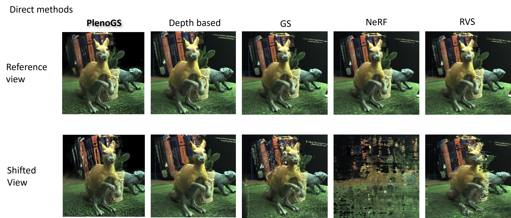
Acknowledgments
Sarah Dury is a research fellow of the Fonds de la Recherche Scientifique – FNRS, Belgium. This work was supported by the 24 Top-Tier International Global Collaborative Research Program funded by ETRI; the IITP grant funded by the Korean government (MSIT) (RS- 2017-II170072); the Wal4XR project (n°2310144); and the OptiCalmar FER (1.060.H.000075).
BibTeX
Comming soon: BibTeX citation for this paper will be available here.